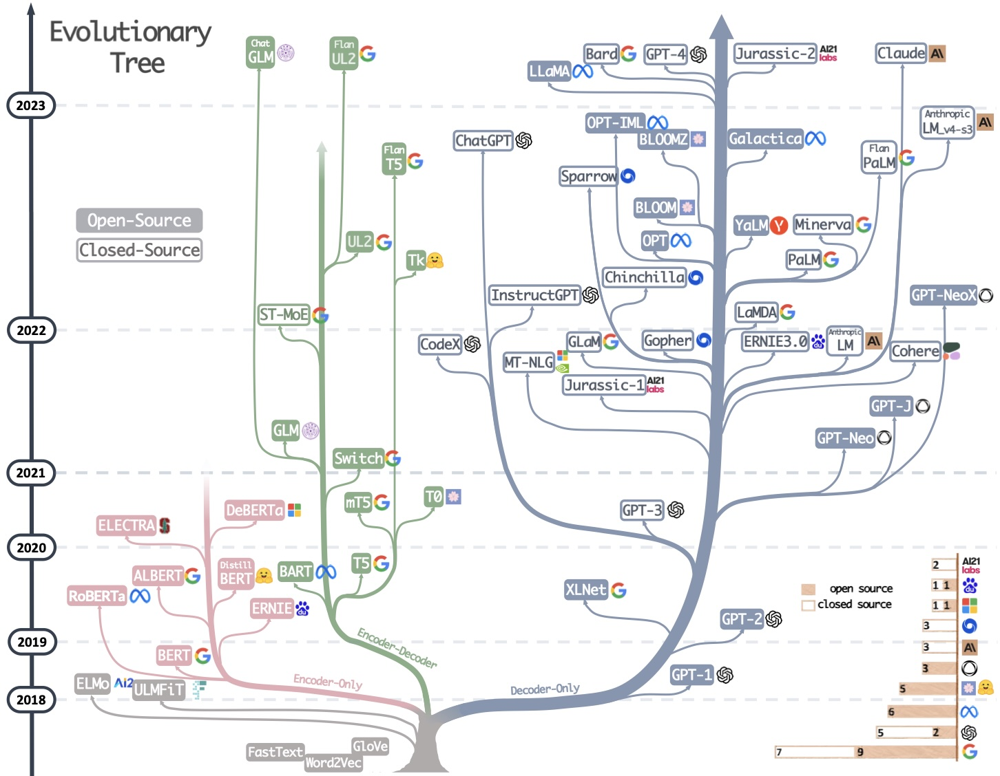
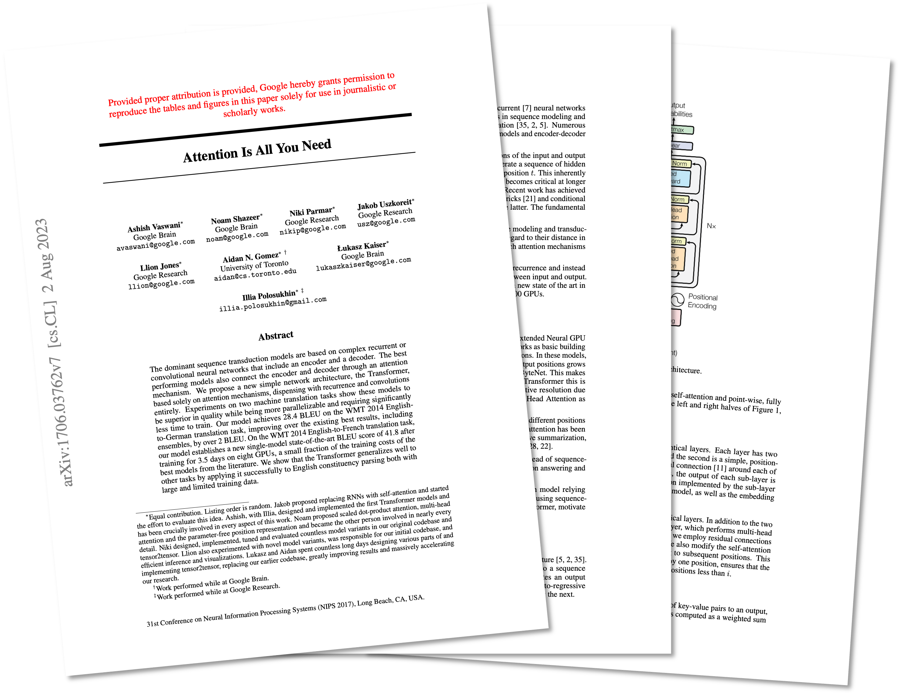
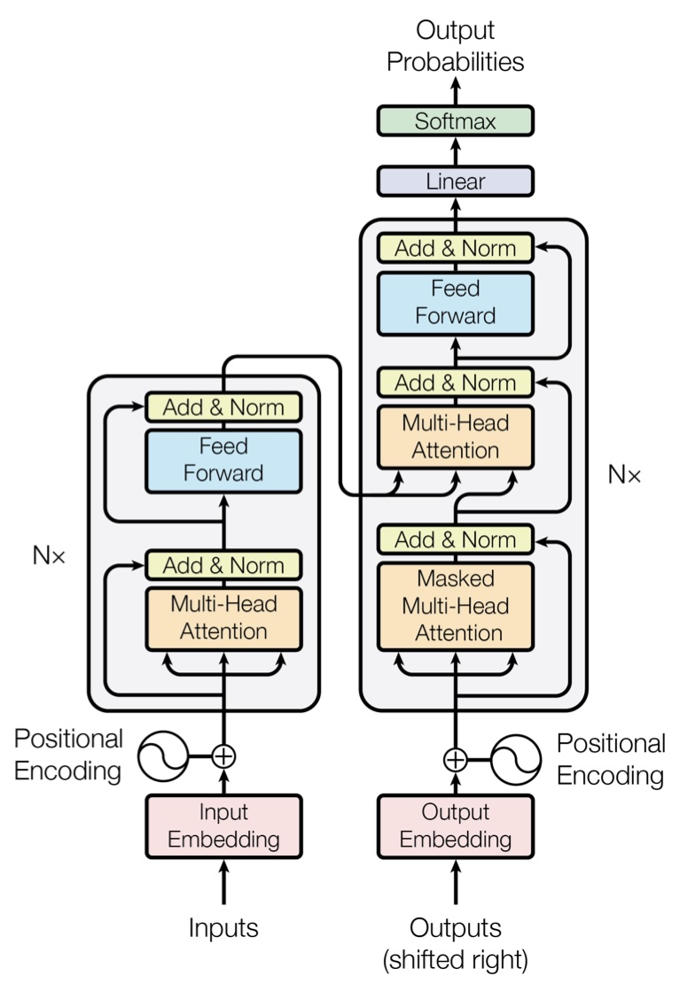
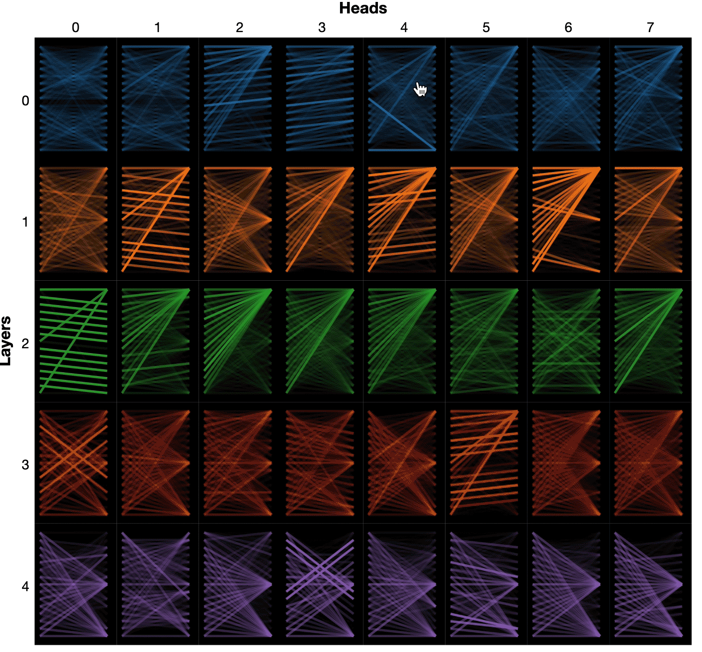
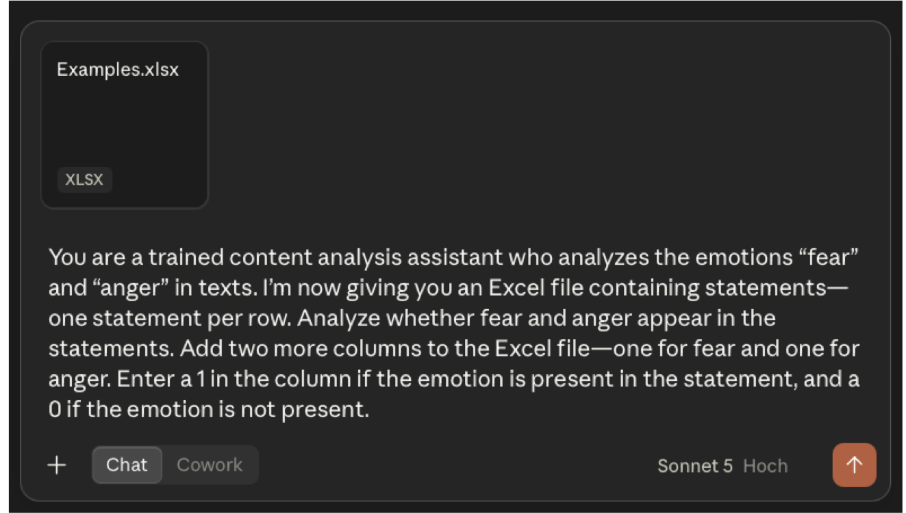
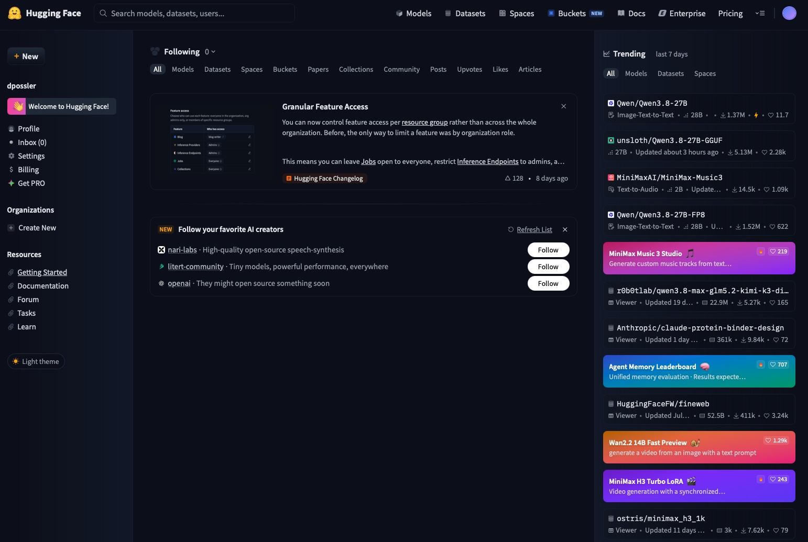
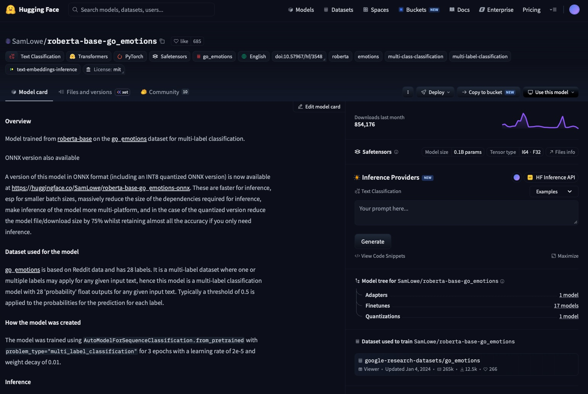

library(ellmer)
text_input <- "It's getting worse every year. COME ON MERZ, DO SOMETHING!!!"
chat <- chat_google_gemini(
api_key = key,
model = "gemini-3.6-flash",
system_prompt = "You are a good research assistant and your job is to annotate texts",
echo = "output"
)
chat$chat_structured(
text_input,
type = type_object(
fear = type_string("choose between: mentioned, not mentioned"),
anger = type_string("choose between: mentioned, not mentioned")
)
)LLMs, model types & Hugging Face
Text Classification with Open Source Models
Welcome!
- Use the arrow keys to navigate
- Press
Mto open the slide menu - Press
?to see all navigation shortcuts - This deck and all other materials are at the course website
LLMs in Content Analysis
Introducing LLMs
“Language models are statistical representations of natural language that use machine learning to model relationships between words. They can perform tasks such as text classification (e.g., whether the sentiment of a text is positive or negative) and contextual text prediction (i.e., what words are likely to follow other words) […] What makes LLMs large then is the sheer amount of input data used to construct them”
Introducing LLMs

(Yang et al., 2023, p. 3)
Note: Already outdated
Under the Hood of LLMs: The Transformer Architecture

- Introduced by Vaswani et al. (2017)
- Complex neural network architecture for machine learning (originally for text translation)
- Innovation: How language is represented and processed

How Can Computers Represent Texts?
Classical approach: Bag-of-words
- Words of a text are understood as isolated, discrete variables
- The order, context, or grammatical function of each word is ignored
Text 1:The Odyssey is great.
Text 2:The Odyssey is bad and not like Homer’s Odyssey.
How Can Computers Represent Texts?
Classical approach: Bag-of-words
Words of a text are understood as isolated, discrete variables
The order, context, or grammatical function of each word is ignored
Procedure:
- Term-extraction: each word is identified
Text 1:The Odyssey is great.
Text 2:The Odyssey is bad and not like Homer’s Odyssey.
How Can Computers Represent Texts?
Classical approach: Bag-of-words
Words of a text are understood as isolated, discrete variables
The order, context, or grammatical function of each word is ignored
Procedure:
- Term-extraction: each word is identified
- A vector space model (e.g., a document-term matrix) is created
Text 1:The Odyssey is great.
Text 2:The Odyssey is bad and not like Homer’s Odyssey.
| The | Odyssey | is | great | bad | and | not | like | Homer’s | |
|---|---|---|---|---|---|---|---|---|---|
| Doc 1 | 1 | 1 | 1 | 1 | 0 | 0 | 0 | 0 | 0 |
| Doc 2 | 1 | 2 | 1 | 0 | 1 | 1 | 1 | 1 | 1 |
How Can Computers Represent Texts?
Two ways of turning that bag of words into a score:
Dictionary-
based text
analysis
based text
analysis
Dictionary
| Word | Sentiment |
|---|---|
| great | +1 |
| bad | −1 |
| like | +1 |
| … | … |
| The | Odyssey | is | great | bad | and | not | like | Homer’s | sent. | |
|---|---|---|---|---|---|---|---|---|---|---|
| Doc 1 | 1 | 1 | 1 | 1 | 0 | 0 | 0 | 0 | 0 | +1 |
| Doc 2 | 1 | 2 | 1 | 0 | 1 | 1 | 1 | 1 | 1 | 0 |
- Dictionary-based text analysis: A list of indicator words (dictionary) is created or used off-the-shelf and frequency of indicator words in documents is counted
Supervised
Machine
Learning
Machine
Learning
Label
Label
Label
Label
Coding Rules
| The | Odyssey | is | great | bad | and | not | like | Homer’s | sent. | |
|---|---|---|---|---|---|---|---|---|---|---|
| Doc 1 | 1 | 1 | 1 | 1 | 0 | 0 | 0 | 0 | 0 | .89 |
| Doc 2 | 1 | 2 | 1 | 0 | 1 | 1 | 1 | 1 | 1 | −.25 |
- Supervised Machine Learning: Based on coded examples (training data), the computer ‘learns’ coding rules (typically, the statistical relationship between words and category values); learned rules are then applied to new material
The problem: Both treat words as isolated variables, ignore context, and only work with a pre-defined/trained vocabulary
How can computers represent texts?
Accounting for the semantic (dis)similarity of words: Word-embeddings
- Words are transformed into numerical vectors; similar words have similar vectors
- Idea: words that are used in similar contexts have a similar meaning
- Transfer learning: algorithms pre-trained on large corpora (e.g., word2vec) for new tasks
| Animacy | Gender | Age | Size | Humanness | Mechanical | |
|---|---|---|---|---|---|---|
| “Boy” → | 0.95 | 0.70 | −0.80 | −0.60 | 0.95 | −0.90 |
| “Man” → | 0.95 | 0.85 | 0.30 | 0.20 | 0.95 | −0.90 |
| “Woman” → | 0.95 | −0.85 | 0.30 | 0 | 0.95 | −0.90 |
| “Bus” → | −0.90 | 0 | 0 | 0.90 | −0.95 | 0.95 |
How can computers represent texts?
Running a PCA on those vectors puts similar words close together in space:
| Animacy | Gender | Age | Size | Humanness | Mechanical | |
|---|---|---|---|---|---|---|
| “Boy” → | 0.95 | 0.70 | −0.80 | −0.60 | 0.95 | −0.90 |
| “Man” → | 0.95 | 0.85 | 0.30 | 0.20 | 0.95 | −0.90 |
| “Woman” → | 0.95 | −0.85 | 0.30 | 0 | 0.95 | −0.90 |
| “Bus” → | −0.90 | 0 | 0 | 0.90 | −0.95 | 0.95 |
→
If we
run a
PCA
If we
run a
PCA
- Word embeddings improve supervised machine learning, as computers can learn the relationship between position in the multidimensional word space and category values
How can computers represent texts?
- The problem with word-embeddings: each word is assigned only one vector, but the meaning of many words is context-dependent
Bank (bæŋk) [noun]
- an organization where people and businesses can invest or borrow money, change it to foreign money, etc., or a building where these services are offered
- sloping raised land, especially along the sides of a river
- a pile or mass of earth, clouds, etc.
- a row of similar things, especially machines or parts of machines
(Cambridge University Press, n.d.)
The bank raised my interest rate.
He was sitting by the banks of the river.
A thick bank of fog is rolling in from the north.
- Groundbreaking innovation of Transformers:
generating “contextualized word embeddings” (Kroon et al., 2024, p. 150) by determining how important each word in the context is to identify the meaning of a word (self-attention), in a particularly computationally efficient manner (parallelization)
Self-Attention Visualized

Give it a try yourself!
From Transformers to LLMs
- Transformers can be pre-trained on large corpora for new tasks (transfer learning)
- LLMs: generic models trained using the Transformer architecture on massive amounts of text, possessing a rich vocabulary and good “understanding” of texts
- Basic model types:
- Encoder models focused on text understanding (e.g., BERT)
- Decoder models focused on text generation (e.g., GPT-4)
Large amounts of non-coded text as training data
Transformer Architecture
This is a text input
Word-
Embedding
Embedding
Position-
Embedding
Embedding
Self-Attention
Neural Network
Large Language
Model
Model
Generic
Encoder
Model
Encoder
Model
Universal
Decoder
Model
Decoder
Model
LLMs in Content Analysis
Large amounts of non-coded text as training data
Transformer Architecture
This is a text input
Word-
Embedding
Embedding
Position-
Embedding
Embedding
Self-Attention
Neural Network
Large Language
Model
Model
Generic
Encoder
Model
Encoder
Model
Universal
Decoder
Model
Decoder
Model
Category-specific
training data
(e.g., coded for tonality)
training data
(e.g., coded for tonality)
Label
Label
Category-Specific
Encoder Model
Encoder Model
Category-specific encoder models
- Fine-tuning a generic encoder model to code a specific category (e.g., tonality) using manually coded texts as training material
- Because of its “language knowledge,” training works faster and with smaller amounts of data than classical machine-learning approaches
- The model can then code that one, specific category
LLMs in Content Analysis
Large amounts of non-coded text as training data
Transformer Architecture
This is a text input
Word-
Embedding
Embedding
Position-
Embedding
Embedding
Self-Attention
Neural Network
Large Language
Model
Model
Generic
Encoder
Model
Encoder
Model
Universal
Decoder
Model
Decoder
Model
Category-specific
training data
(e.g., coded for tonality)
training data
(e.g., coded for tonality)
Label
Label
Category-Specific
Encoder Model
Encoder Model
Task-specific
training data
(e.g., NLI-Data)
training data
(e.g., NLI-Data)
Task
Task
Task-Specific
Encoder Model
Encoder Model
Task-specific encoder models
- Fine-tuning a generic encoder model for the general task of classifying texts, using general task data (e.g., from the NLI task) as training material
- The model can code (almost) anything, as long as the input follows the task’s specifics
Short Excurse: The NLI Task
- Classical task from machine learning
- Determining whether a source text (premise) and a statement about it (hypothesis) are (1) true, (2) false, or (3) neutral in relation to each other
Premise
Hypothesis
“The film is terribly directed and artistically unambitious.”
false
“The movie is good.”
true
“The movie is bad.”
neutral
“The movie is brand new.”
LLMs in Content Analysis
Large amounts of non-coded text as training data
Transformer Architecture
This is a text input
Word-
Embedding
Embedding
Position-
Embedding
Embedding
Self-Attention
Neural Network
Large Language
Model
Model
Generic
Encoder
Model
Encoder
Model
Universal
Decoder
Model
Decoder
Model
Category-specific
training data
(e.g., coded for tonality)
training data
(e.g., coded for tonality)
Label
Label
Category-Specific
Encoder Model
Encoder Model
Task-specific
training data
(e.g., NLI-Data)
training data
(e.g., NLI-Data)
Task
Task
Task-Specific
Encoder Model
Encoder Model
Universal
Decoder Model
Decoder Model
Universal decoder models
- Use the model’s ability to generate plausible text directly for coding — no fine-tuning needed
- Receive the text and the coding instructions as a prompt (prompt tuning): with examples (few-shot) or without (zero-shot)
- Can code (almost) anything
LLMs in Content Analysis
Given their different approaches and training, the different models produce different outputs for the same input text — “The film is terribly directed and artistically unambitious.”
Input
Model
Output
Text:“The film is terribly directed and artistically unambitious.”
Category-specific
Encoder Model(In this example: trained to code sentiment)
Encoder Model(In this example: trained to code sentiment)
Positive: 0.02
Negative: 0.97
Neutral: 0.01
Negative: 0.97
Neutral: 0.01
Text:“The film is terribly directed and artistically unambitious.”
Hypothesis:“The tone of the text is negative.”
Task-specific
Encoder Model(In this example: trained for the NLI task)
Encoder Model(In this example: trained for the NLI task)
True: 0.86
Wrong: 0.10
Neutral: 0.04
Wrong: 0.10
Neutral: 0.04
Text:“The film is terribly directed and artistically unambitious.”
Prompt:“Is this text negative, positive, or neutral?”
Universal
Decoder Model
Decoder Model
“The text is negative because it contains words that express negative evaluations.”
How to Access the Power of LLMs for Text Analysis
Can I Train my Own LLM?
- Well, you could — but training and/or fine-tuning an LLM is very resource-demanding
Example: Llama 3
- 15 trillion tokens (words)
- 7.7 million GPU-hours
- 2,290 tons of CO₂-equivalent emissions
(≈ 587 trips Luxembourg–Tokyo of one person in a B787 ✈️)
(AI@Meta, 2024; Grattafiori et al., 2024)
- Thus, LLMs can be understood as a research infrastructure
Research infrastructure: “Tools and institutions available to all members of the respective scientific community to support their research” (Wissenschaftsrat, 2011, p. 13)
Commercial LLMs
Interact with LLMs either via chatbots…

Warning
Chatbots do not allow you to code text by text (i.e., loop over the corpus) but rather code the whole batch. This quickly becomes problematic due to the context window (e.g., limited, carry over effects, etc.).
or using their API (application programming interface).
- Typically most powerful
(but Chinese open-source models are catching up fast) - No worry about computational needs
- No technical expertise required
(especially when using chatbots)
- But it can quickly become very costly
- But low reproducibility, as the models get updated quickly
- But often not very transparent
- But severe data-security issues (good luck getting IRB approval)
- But only universal decoder models available
(i.e., using a sledgehammer to crack a nut)
Open Source LLMs
Download publicly available LLMs, or use a server to run them online
- A wide range of models available (including quicker & smaller encoder models)
- Eases reproducibility (you download and store the exact model you used)
- Good data security, as everything runs locally / on your own infrastructure
(your IRB likes that) - More control means room for customization and testing
- But computing power for running complex models can quickly become costly
- But you need a little more expertise
(we’ll help you with that today) - But models can be less powerful (but again, Chinese open-source models are catching up fast)
How to Best Access Open Source LLMs
Note: these are just prototypical solutions — things can be more complicated in practice.
Three decisions to make — and they are largely independent of each other
1 — Model storage
📦
Where does the model come from?
Open weights are published on model hubs. You download the exact version you need — and can archive it, which is what makes your analysis reproducible.
1 — Model storage
- Hugging Face — the de-facto standard: weights, datasets, model cards, and the code to load them
- Ollama keeps its own curated library of models for local use
- Alternatives (Kaggle, ModelScope, …) exist, but are far smaller
2 — Running the model
⚙️
Whose hardware does the computing?
Somewhere, a GPU (or CPU) has to do the work. The options trade control and data security against convenience and cost.
2 — Running the model
- Locally:
transformers, Ollama — best data security, but limited to smaller models - On a GPU server: anything that runs Python — Google Colab, your university’s cluster
- Via a cloud API: Replicate, Chat AI (GWDG) — no hardware needed, pay per use
3 — Interacting
💬
How do you send texts and get labels back?
For content analysis you need to loop over your corpus in a script rather than chat — so you drive the model from R or Python.
3 — Interacting
- Python:
transformers— load and run models directly - R:
ellmer— one interface for Ollama and cloud APIs;klausfor Chat AI (GWDG) - Chatbot interfaces: fine for exploring, unsuited for reproducible coding
Click a card to see the concrete software
The Platform Hugging Face
🤗
Hugging Face: The Largest Model Hub
| Model hub | # Models | # Datasets | Distribution |
|---|---|---|---|
| Hugging Face | 752,269 | 174,226 | Hub APIs, Git |
| Spark NLP | 41,346 | – | Hub APIs, Download |
| OpenCSG | 26,187 | 327 | Git |
| Kaggle | 5,932 | 355,251 | Hub APIs, Download |
| ModelScope | 5,749 | 2,302 | Hub APIs, Git |
| ModelZoo | 3,245 | – | Git |
| OpenMMLab | 2,404 | – | Git |
| ONNX Model Zoo | 1,720 | – | Git |
| NVIDIA NGC | 759 | – | CLI, Download |
| MindSpore | 706 | 390 | Git, Download |
| WiseModel | 624 | 524 | Git |
| PaddlePaddle | 272 | 10,000 | Git |
| SwanHub | 269 | – | Git |
| Liandanxia | 264 | 381 | Git |
| PyTorch Hub | 52 | – | Hub APIs, Git |
HuggingFace as the central platform for:
- developing LLMs
- sharing ready-to-use LLMs
- using shared LLMs
HuggingFace as Infrastructure

Let’s take a look
HuggingFace as Infrastructure

- Models are shared on the platform
- Model cards report on their composition and background
Warning
- Not all models are transparently documented (Pepe et al., 2024)
- While all models are checked for security, some vulnerabilities exist (Zhao et al., 2024)
- The platform has strong gatekeeping power (Gorwa & Veale, 2024)
HuggingFace as Infrastructure
The Python package transformers allows easy access, download, and usage of LLMs from the repository — models can be used locally in a few lines of code:
text = "The film is terribly directed and artistically unambitious."
Task-specific (NLI) encoder
from transformers import pipeline
classifier = pipeline("zero-shot-classification",
model="MoritzLaurer/bge-m3-zeroshot-v2.0")
classifier(text, hypothesis_template="The tone of the text is {}",
candidate_labels=["positive", "neutral", "negative"])
# {'labels': ['negative', 'neutral', 'positive'],
# 'scores': [0.733, 0.260, 0.007]}Universal decoder
from transformers import pipeline
classifier = pipeline("text-generation",
model="meta-llama/Meta-Llama-3.1-8B-Instruct")
prompt = [{"role": "system", "content": "Is this text negative, positive, or neutral?"},
{"role": "user", "content": text}]
classifier(prompt, max_new_tokens=50, do_sample=False)
# "This text is negative. The author criticizes the film as
# 'terribly directed' and 'artistically unambitious'."References
AI@Meta. (2024, December 6). Meta-llama/Meta-Llama-3-70B · Hugging Face. https://huggingface.co/meta-llama/Meta-Llama-3-70B
Alammar, J. (2018). The illustrated Word2vec. https://jalammar.github.io/illustrated-word2vec/
Boumans, J. W., & Trilling, D. (2016). Taking stock of the toolkit: An overview of relevant automated content analysis approaches and techniques for digital journalism scholars. Digital Journalism, 4(1), 8–23. https://doi.org/10/gfxhr4
Demszky, D., Yang, D., Yeager, D. S., Bryan, C. J., Clapper, M., Chandhok, S., Eichstaedt, J. C., Hecht, C., Jamieson, J., Johnson, M., Jones, M., Krettek-Cobb, D., Lai, L., JonesMitchell, N., Ong, D. C., Dweck, C. S., Gross, J. J., & Pennebaker, J. W. (2023). Using large language models in psychology. Nature Reviews Psychology, 688–701. https://doi.org/10.1038/s44159-023-00241-5
Gorwa, R., & Veale, M. (2024). Moderating model marketplaces: Platform governance puzzles for AI intermediaries. Law, Innovation and Technology, 16(2), 341–391. https://doi.org/10.1080/17579961.2024.2388914
Grattafiori, A., Dubey, A., Jauhri, A., Pandey, A., Kadian, A., Al-Dahle, A., Letman, A., Mathur, A., Schelten, A., Vaughan, A., Yang, A., Fan, A., Goyal, A., Hartshorn, A., Yang, A., Mitra, A., Sravankumar, A., Korenev, A., Hinsvark, A., … Ma, Z. (2024, November 23). The Llama 3 herd of models. https://doi.org/10.48550/arXiv.2407.21783
Grimmer, J., & Stewart, B. M. (2013). Text as data: The promise and pitfalls of automatic content analysis methods for political texts. Political Analysis, 21(3), 267–297. https://doi.org/10.1093/pan/mps028
Gruber, J. B., & Votta, F. A. (2025). Large language models. In A. Nai, M. Grömping, & D. Wirz (Eds.), Elgar Encyclopedia of Political Communication (pp. 356–360). Edward Elgar Publishing. https://doi.org/10.4337/9781035301447.vol2.00087
Kroon, A., Welbers, K., Trilling, D., & Van Atteveldt, W. (2024). Advancing automated content analysis for a new era of media effects research: The key role of transfer learning. Communication Methods and Measures, 18(2), 142–162. https://doi.org/10/gsv44t
Laurer, M., Atteveldt, W. van, Casas, A., & Welbers, K. (2024a). Less annotating, more classifying: Addressing the data scarcity issue of supervised machine learning with deep transfer learning and BERT-NLI. Political Analysis, 32(1), 84–100. https://doi.org/10/gsgptm
Laurer, M., Atteveldt, W. van, Casas, A., & Welbers, K. (2024b, March 22). Building efficient universal classifiers with natural language inference. https://doi.org/10.48550/arXiv.2312.17543
Minaee, S., Mikolov, T., Nikzad, N., Chenaghlu, M., Socher, R., Amatriain, X., & Gao, J. (2024). Large language models: A survey. https://doi.org/10.48550/ARXIV.2402.06196
Pepe, F., Nardone, V., Mastropaolo, A., Bavota, G., Canfora, G., & Di Penta, M. (2024). How do Hugging Face models document datasets, bias, and licenses? An empirical study. Proceedings of the 32nd IEEE/ACM International Conference on Program Comprehension, 370–381. https://doi.org/10/g833d2
Rudkowsky, E., Haselmayer, M., Wastian, M., Jenny, M., Emrich, Š., & Sedlmair, M. (2018). More than bags of words: Sentiment analysis with word embeddings. Communication Methods and Measures, 12(2–3), 140–157. https://doi.org/10/ghhzgh
Smith, B. (2024, May 13). A complete guide to BERT with code. Towards Data Science. https://towardsdatascience.com/a-complete-guide-to-bert-with-code-9f87602e4a11/
Starmer, J. (2023, July 24). Transformer neural networks, ChatGPT’s foundation, clearly explained!!! https://www.youtube.com/watch?v=zxQyTK8quyY
Turner, R. E. (2024, February 8). An introduction to transformers. https://doi.org/10.48550/arXiv.2304.10557
Vaswani, A., Shazeer, N., Parmar, N., Uszkoreit, J., Jones, L., Gomez, A. N., Kaiser, Ł., & Polosukhin, I. (2017). Attention is all you need. Advances in Neural Information Processing Systems, 30. https://proceedings.neurips.cc/paper_files/paper/2017/hash/3f5ee243547dee91fbd053c1c4a845aa-Abstract.html
Viehmann, C., Beck, T., Maurer, M., Quiring, O., & Gurevych, I. (2023). Investigating opinions on public policies in digital media: Setting up a supervised machine learning tool for stance classification. Communication Methods and Measures, 17(2), 150–184. https://doi.org/10/gsr7sv
Vig, J. (2019). A multiscale visualization of attention in the transformer model. Proceedings of the 57th Annual Meeting of the Association for Computational Linguistics: System Demonstrations, 37–42. https://doi.org/10.18653/v1/P19-3007
Welbers, K., Van Atteveldt, W., & Benoit, K. (2017). Text analysis in R. Communication Methods and Measures, 11(4), 245–265. https://doi.org/10.1080/19312458.2017.1387238
Widmann, T., & Wich, M. (2023). Creating and comparing dictionary, word embedding, and transformer-based models to measure discrete emotions in german political text. Political Analysis, 31(4), 626–641. https://doi.org/10/gr9dpq
Wissenschaftsrat. (2011). Empfehlungen zu Forschungsinfrastrukturen in den Geistes- und Sozialwissenschaften. https://www.wissenschaftsrat.de/download/archiv/10465-11
Yang, J., Jin, H., Tang, R., Han, X., Feng, Q., Jiang, H., Yin, B., & Hu, X. (2023). Harnessing the power of LLMs in practice: A survey on ChatGPT and beyond. https://doi.org/10.48550/ARXIV.2304.13712
Zhao, J., Wang, S., Zhao, Y., Hou, X., Wang, K., Gao, P., Zhang, Y., Wei, C., & Wang, H. (2024). Models are codes: Towards measuring malicious code poisoning attacks on pre-trained model hubs. Proceedings of the 39th IEEE/ACM International Conference on Automated Software Engineering, 2087–2098. https://doi.org/10.1145/3691620.3695271